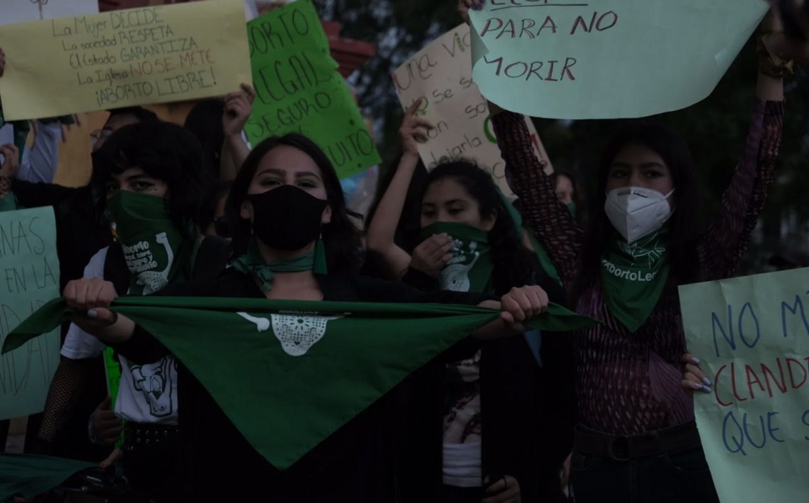

“En la tele pasaban dibujos animados mientras me realizaban el aborto por succión. El dolor era insoportable, era como diez veces el dolor de cólicos menstruales. Yo miraba por la pequeña ventana del consultorio y lo que veía era montones de basura humeante en la berma de la avenida. No sabía si la mujer que me realizaba el aborto era una doctora. Recuerdo sus manos llenas de joyas y su cabello cepillado. No estaba segura de que fuera doctora, pero no me atreví a preguntar.”
Teresa, Lima, 2015.
La mayoría de las internaciones y muertes de mujeres se dan en los sectores más pobres de la sociedad, lo que no sólo implica que el objetivo de proteger la vida prenatal no se cumple, sino que la penalización del aborto acentúa la inequidad existente. Los países donde el aborto está despenalizado, no muestran complicaciones en la salud o internaciones por las complicaciones del aborto inseguro y menos aún muertes maternas.
Sebastiani, M. (2018). El aborto como un bien social. Revista de Bioética y Derecho, (43), 33-43.
